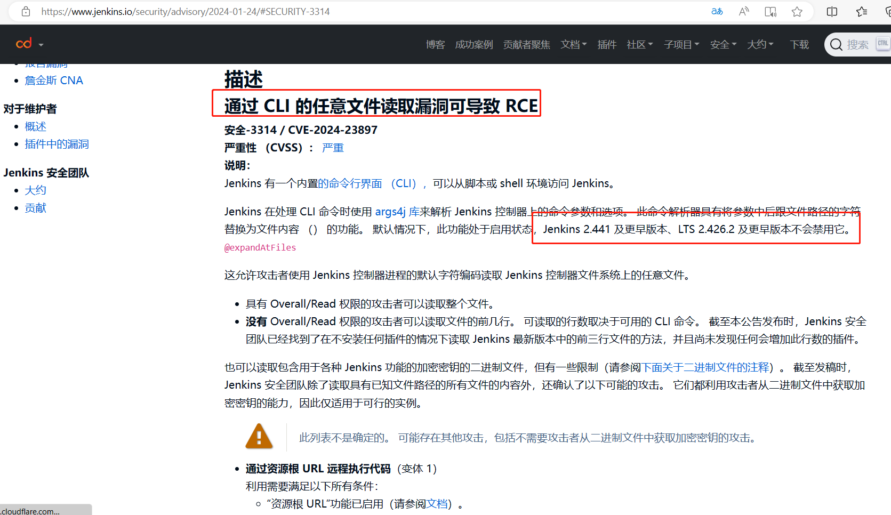
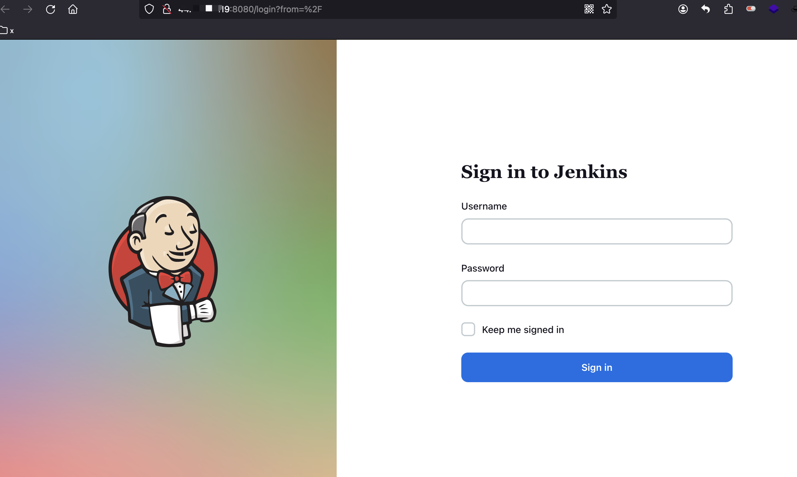
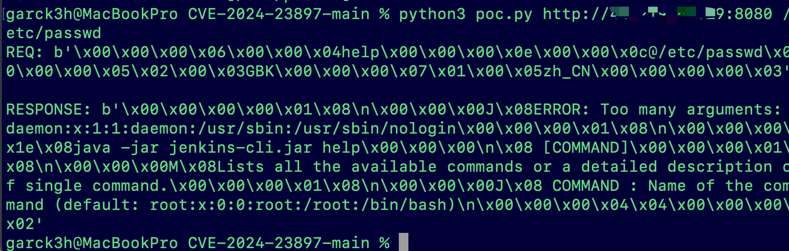

Jenkins任意文件读取漏洞（CVE-2024-23897）
前言
Jenkins是一款开源CI&CD软件，用于自动化各种任务，包括构建、测试和部署软件。Jenkins有一个内置的命令行界面（CLI），可从脚本或shell环境访问Jenkins。处理CLI命令时，Jenkins使用args4j库解析Jenkins控制器上的命令参数和选项。
漏洞成因
在处理CLI命令时，Jenkins使用args4j库解析Jenkins控制器上的命令参数和选项。此命令解析器具有将参数中的@字符后跟文件路径替换为文件内容（expandAtFiles）的功能。此功能默认启用，Jenkins 2.441及更早版本、LTS 2.426.2及更早版本不会禁用它。

影响版本范围
1 | Jenkins <= 2.441 |
漏洞复现
可以使用docker自行在本地部署环境后进行验证
1 | docker pull jenkins/jenkins:2.426.2-lts |

使用命令
1 | python3 poc.py http://x.x.x.x:8080 /etc/passwd |

影响
任意文件读取：拥有Overall/Read权限的攻击者可以读取整个文件。
远程代码执行：攻击者能通过漏洞读取到二进制形式密钥
修复建议
Jenkins 2.442， LTS 2.426.3已禁用相关命令解析器特性。建议更新至这些版本以解决漏洞。
收入到内网，若在公网暴露可设置ACL仅允许可信IP进行访问